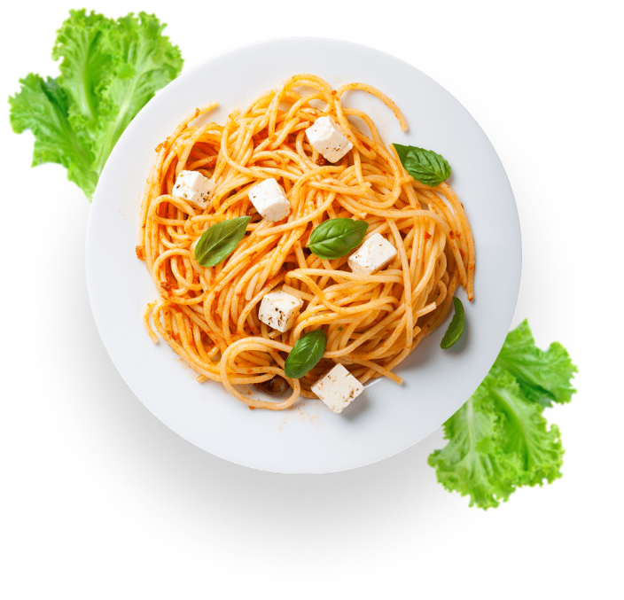

Restauran
Italian Cousine
Delizioso is a Mediterranean cuisine consisting of the ingredients, recipes, and cooking techniques developed in Italy since Roman Tince and later spread around the world together with waves of Italian diaspora.
